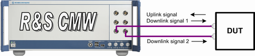

The scenario "1CC - nx2" is used for setups with two UE RX antennas (SIMO 1x2, MIMO nx2 and beamforming). A test setup for this scenario involves one uplink and two downlink signals at the UE side. Typically, one bidirectional connection carries one uplink and one downlink signal. An additional connection carries the second downlink signal. The two downlink signals must be transmitted via different TX modules and different RF connectors, which implies that the instrument must support at least two TX paths. You can use, for example, RF 1 COM for the bidirectional connection and RF 3 COM for the second downlink connection.

Depending on the installed hardware and software options, you can run several signaling application instances in parallel.
Example: Assume an instrument with two signaling unit wideband (SUW), one signaling unit universal (SUU), four TX paths and four RX paths.
- Two LTE signaling instances using the "1CC - nx2" scenario, or
- Two LTE signaling instances using the "1CC - 1x1" scenario, plus one instance of an SUU signaling application (e.g. GSM / CDMA2000)
- One LTE signaling instance using the "1CC - nx2" scenario, plus one instance of an SUW signaling application (e.g. WCDMA)
- One LTE signaling instance using a carrier aggregation scenario with or without MIMO
The LTE and WCDMA signaling applications both use the SUW. An SUW can only be used by one instance at a time.